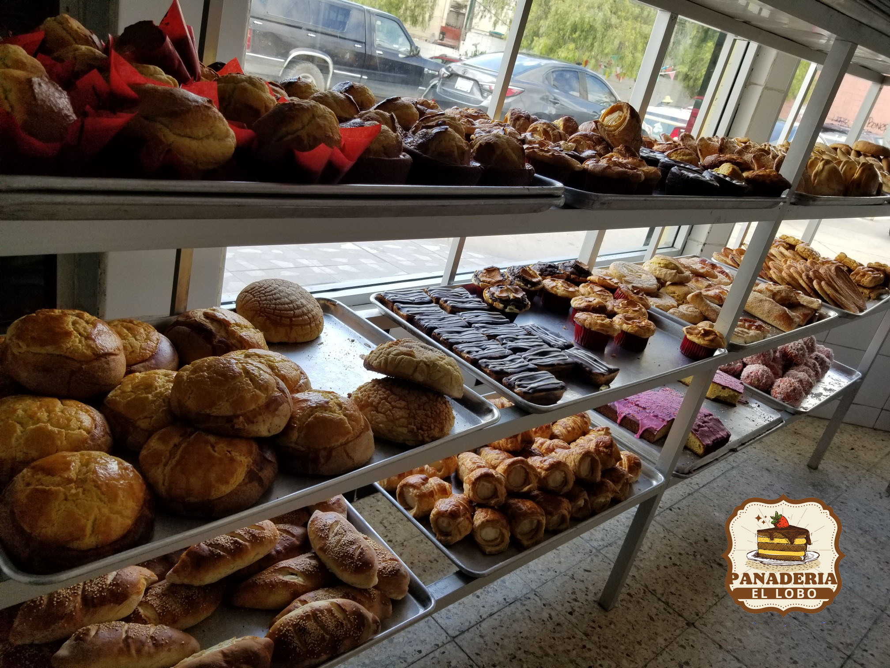

NOSOTROS

Historia de la panaderia:
Lugar: Miguel Alemán No.28 local 11 plaza presidentes, presidentes 22150, Tijuana, Baja California, Tijuana, México. Fecha de fundación: 1985 Cómo inicio: Inicio siendo un lugar un poco pequeño, años después tuvo una remodelación y nuevo diseño para apertura a los clientes.
Misión
El objetivo principal por el que existe panaderia el Lobo, es para vender los mejores panes a nuestros clientes.
Visión
La visión de panaderia el Lobo es ser la opción número 1 de Tijuana en venta de panes y servicio.


2023 Derechos reservados.
Desarrollado por: Angel Ventura Triche Ramirez.
Matricula:02005870. Grupo:606.
Materia: Diseño web Profesor: Gustavo Vazquez Montes
Cobach Nueva Tijuana.